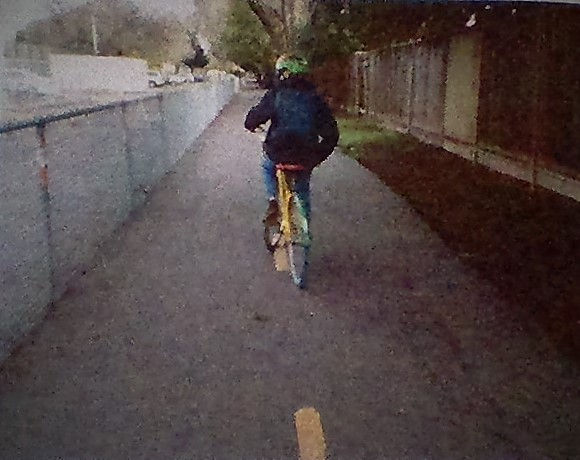

It has always been a problem of people stealing Google's bikes, but a JLS Student? I was riding back home when I saw some kid on a google bike. “What are you doing?” I ask. “You STOLE a Google bike?” The boy replies, “yeah, my mom could not pick me up from soccer practice, so I just found a google bike there and took it”. Okay, sure, he stole a Google bike, but is he really to be accused? Some say that the Google bike was already misplaced to be near his soccer field, and he just took it, he didn't steal it from google property! Then again, he should ethically just used it to return home, then bring it back to google the next morning! My dad works at Google, and this is why it concerns me.
Welcome, Welcome! To the annual JLS geography bee. Here are the contestants:
Contestants will be competing on Wednesday, 12/14/16